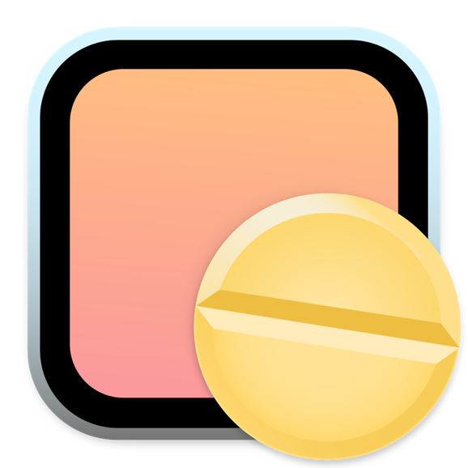

Joe Pham
iOS and Web Developer
üìç Toronto, Canada üá®üá¶
✦
Hi there! I'm Joe. I'm a passionate iOS and Web Developer. Currently I'm also a programming student at George Brown College in Toronto, ON. Truth be told, I'm an introvert who loves to observe things around üòä
My first experience with programming was when I was 11 with Turbo Pascal 7.0. I can still imagine closing my eyes, trying to recite the code on an *air* keyboard back then. I loved tampering with the software on my devices, and would spend hours trying to install new OSes on my PC and Java-based cellphones. Since then, I was always a proud top performer in IT class. What a beautiful trip down the memory!
Alas, as years passed, I didn't have the courage to live my dream as a programmer and chose Hospitality. While I valued my experience in Customer Service, it occurred to me I was meant to be a programmer. Here I am in my 3rd year at college finishing my programming degree ü•≥! Watching the code becoming a tangible something on my phone makes me happy, and fixing the bugs feels like raising a child to me.
I've been honing my skills, and particularly love developing iOS apps with both UIKit and SwiftUI. I'm seeking a part-time or intern role where I can help a company achieve their goals üí™!
On the side, I'm also the sole Vietnamese language translator contributing to localization projects of several App Store featured applications.
Reach me at...


Notable Projects
Below are projects where I spent significant time with to solving technical complexity and challenges. Please check out my GitHub account for a full list.
✦

Better You
Better You is your habit tracker companion, holding you in check with your mental self in the world we're currently living in.
I faced and overcame heaps of technical challenges building Better You from scratch, and refactoring its code to be readable and easily scalable. Multiple concepts implemented are available in the source code README.
✦

Quizzical
A mini geography quiz game that draws input from the Open Trivia DB API!
⭐️ Works best on a desktop browser ⭐️
Built using ReactJS framework, featuring various concepts including: JSON fetching and parsing, declarative components, props, single source of truth, conditional rendering, etc.
✦

WikiCountry
Go geograpeeps! WikiCountry üåç is your geographic Swiss knife to learn quick facts about countries around the world, including each of their capital city, flag, languages, and more.
Built from scratch using Apple's UIKit framework, with MVC Architecture Pattern, featuring technical features including modal views, dynamic image ratio, modularization, JSON parsing, etc.
✦

NANA - Not Another Notes App
A simple notes app that imitates the look of Apple's stock Notes app, letting you add, share, and delete notes.
This is a milestone project coded from scratch from #100DaysOfSwift challenge by Paul Hudson.
Built using Apple's UIKit framework and 100% programmatic AutoLayout, utilizing the MVC design pattern, Result type, UserDefaults, and Delegate pattern.
Contributions
I commit to giving back to the community that has boosted my knowledge.
By dedicating to translating the interface content of various apps, I help expand their market to much more users. These apps have been featured by Apple across its App Stores, including...
- Alpenglow by Andrew Yates
-  Amphetamine by William Gustafson
-
 Broadcasts
by Steven Troughton-Smith
Broadcasts
by Steven Troughton-Smith
- Cibo by Jordi Bruin
-
 ColourSpot
by Julien Widmer
ColourSpot
by Julien Widmer
-
 Navi
by Jordi Bruin
Navi
by Jordi Bruin
- Ochi by Michael Tigas
-
 Posture Pal
by Jordi Bruin
Posture Pal
by Jordi Bruin